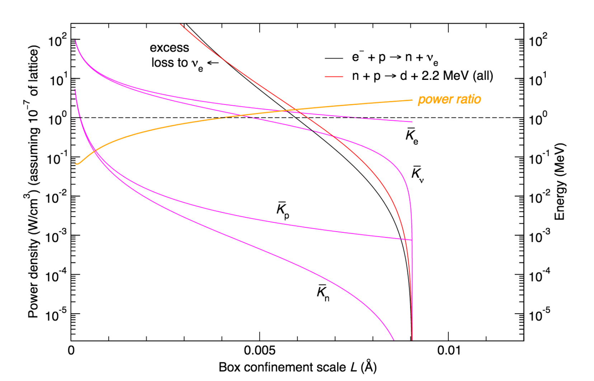

<#2453#>Figure<#2453#> 4:
<#2454#>Kinetic Energy and Power as a function of Box Length<#2454#>
| <#2456#>

<#2456#> |
Figure #fig:results#854> presents the results of relativistic kinematics and excess power calculations, as a function of box length.
For illustrative purposes, we include results box sizes even below the Compton length. The excess power ratio is positive for #math125##tex2html_wrap_inline1259#, with a maximum of almost a factor of 3.
#acknowledgments856#